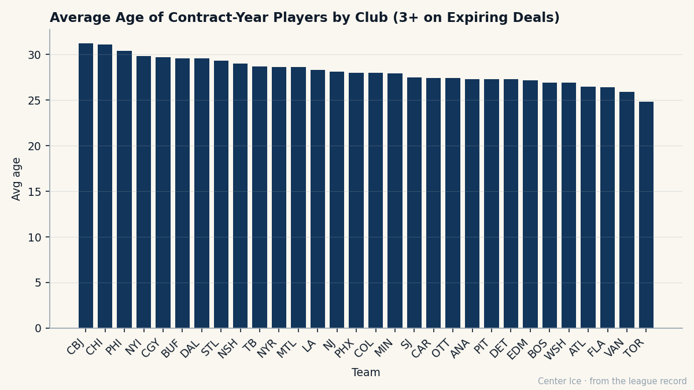

CHI
CHIThree Risers, a $0.90M Anchor, and the Night Six Men Meet Their Old Rooms
Chicago has the fourth-cheapest payroll in the league and three players rising on the Bureau's Index. Two came from Newark. On November 2, they all go back.
 Carol BinghamFeatures writer · Rinkside
Carol BinghamFeatures writer · RinksideThe Bureau's Development Index published its form column this week and three Chicago players sit on the riser list. Igor Radulov80 is +11.  Steve McCarthy81 is +8. Ari Ahonen89 is +7. A fourth,
Steve McCarthy81 is +8. Ari Ahonen89 is +7. A fourth,  Jay Pandolfo68, is on the faller list at -4. Four Index moves at one club, in one edition, on a payroll of $48.74M that reads as the fourth-cheapest in the league.
Jay Pandolfo68, is on the faller list at -4. Four Index moves at one club, in one edition, on a payroll of $48.74M that reads as the fourth-cheapest in the league.
Chicago plays at  New Jersey Devils on November 2, twenty days from now, and three of the visitors left Newark last May. Ahonen, Pandolfo, and
New Jersey Devils on November 2, twenty days from now, and three of the visitors left Newark last May. Ahonen, Pandolfo, and  Bryan Muir67 departed the Devils on the same date. Three men left Chicago for Newark on that same date:
Bryan Muir67 departed the Devils on the same date. Three men left Chicago for Newark on that same date:  Nathan Dempsey69,
Nathan Dempsey69,  Michael Leighton80,
Michael Leighton80,  Steve Passmore75. Six players, one ice, two rooms that traded bodies in the summer and will see each other across the blue line before the calendar marks a month.
Steve Passmore75. Six players, one ice, two rooms that traded bodies in the summer and will see each other across the blue line before the calendar marks a month.
The riser and the faller, opposite directions
Ahonen is 24. His base grade in the Book is 81. The Index has him at 89, which is +7. For a goaltender, that kind of move between editions means he is playing at a level the base grade does not account for. The Index does not explain why. It says only that the number moved, and it moved seven places above where the Book alone would place him.
Pandolfo is 30. His base is 76, his overall today reads 70. That is 4 below base, and it puts him on the faller list alongside  Jamal Mayers70 at
Jamal Mayers70 at  St. Louis Blues and
St. Louis Blues and  Keith Carney72 at
Keith Carney72 at  Mighty Ducks of Anaheim. He played 1 game and recorded no points. A man at 76 who reads 70 is playing below what the Book thinks he is.
Mighty Ducks of Anaheim. He played 1 game and recorded no points. A man at 76 who reads 70 is playing below what the Book thinks he is.
These two men shared a room in Newark last season. They arrived in Chicago the same summer. One went up 7 on the Index, the other down 4. That is 11 places of separation on the Bureau's scale, and both men took the same flight.
The Index measures form, the current-term movement on top of the base grade. A man at 81 who reads 89 today is playing above his base. A man at 76 who reads 70 is not. The two grades coexist: the Book says what he is, the Index says what he has been lately. Chicago has two players pulling in opposite directions on that second measure.

The chart above shows the average age of each club's contract-year group. Chicago sits at 31.1 years, second-oldest behind Columbus at 31.2. Toronto, which won the Stanley Cup last spring, carries a contract-year group averaging 24.8. The players Chicago must re-sign or replace are older than almost anyone else's. Replacements at that age do not come cheap.
The $0.90M left wing who holds it together
 Mark Bell84 is 25. He is listed at 84 in the Book. His salary is $0.90M. His morale reads 94. He has one year left on his contract. The season is 9 days old and he has 1 game played, 1 point.
Mark Bell84 is 25. He is listed at 84 in the Book. His salary is $0.90M. His morale reads 94. He has one year left on his contract. The season is 9 days old and he has 1 game played, 1 point.
In the Bureau's contract-year class, 267 players across the league carry one year remaining, worth $439.72M in combined salary. The top 30 of them by overall runs from  Roberto Luongo95 at 97 down to
Roberto Luongo95 at 97 down to  Brian Leetch80 at 84. Bell sits in that group at 84. He is tied for the cheapest salary on the entire list: $0.90M. The only other players in that top 30 making $0.90M are
Brian Leetch80 at 84. Bell sits in that group at 84. He is tied for the cheapest salary on the entire list: $0.90M. The only other players in that top 30 making $0.90M are  Rostislav Klesla87, Jason Bacashihua91, and Maxime Ouellet86.
Rostislav Klesla87, Jason Bacashihua91, and Maxime Ouellet86.
A left wing rated 84 for $0.90M in his final year is the kind of number that does not survive a playoff run. If Chicago wins 35 games by January, Bell's price doubles. If they win 25, it stays exactly where it is. The room's economics turn on whether the young risers hold, because the old contract-year group at 31.1 years of average age costs more to replace than most.
What the risers cost, and what they might
Radulov is 23, drafted in 2000 at pick 74, third round. His base grade is 71. The Index has him at 80, +11 above base. His potential in the Book reads 78, which the Bureau describes as the likelihood of development. He is playing above his base by 11 points, which is the largest single jump on the riser list alongside  Marian Gaborik99 at Toronto.
Marian Gaborik99 at Toronto.
McCarthy is 24. His base is 75, the Index has him at 81. He played 1 game, logged 1 point. A defenseman at +8 is a blueliner who started seeing ice he was not seeing last year, or who started executing at the level the base grade suspected he could.
Ahonen, who came from Newark, is at 89 overall. If the Index holds even a partial correction toward his base of 81, he is still a goaltender worth having in the top third of the league's creases. At 89, he is a starting goaltender on any roster in the league. Chicago got him from New Jersey in the summer exchange that sent Dempsey, Leighton, and Passmore the other way.
November 2, Newark
The bad blood section runs long this year. The Bureau logs 160-plus reunion dates across the league. Most involve one man meeting one old room. The Newark game on November 2 carries six names at once: Ahonen, Pandolfo, and Muir wearing Chicago's sweater on the Devils' ice; Dempsey, Leighton, and Passmore wearing Newark's against their old club.
Pandolfo is the one who will feel it hardest. A 30-year-old left wing, 4 places below his base, facing the room that gave up on him. Ahonen is 24 and 7 places above his base. Same summer. Same flight. Different Indexes. The Bureau does not measure how a man sleeps the night before he plays against the room that decided he was not enough.
Chicago's payroll reads $48.74M. The Devils' reads $58.50M. The two rooms swapped three players each in the summer, and on a Tuesday in Newark, both of them will look at the scoreboard and see whether the swap worked.
So far, one has and one has not. Ahonen is +7. Pandolfo is -4. Bell at $0.90M is still here, still 84, still one year from the market. Twenty days from now, the number moves in front of the people who used to pay his ticket.